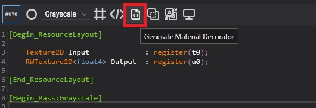
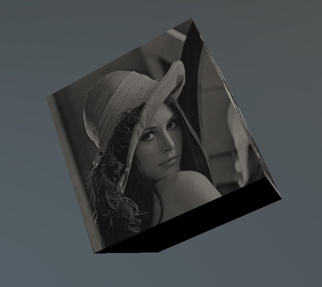

Create Compute Tasks
Compute Tasks allows run tasks on GPU. Compute tasks are associated with a compute effect. It is very useful to improve the performance of a hard task that runs slow on the CPU.
Compute Effect
Before creating a Compute task you need to create a compute effect from the Assets Details panel and coding the task on HLSL language.

Example
This is an example of computing task. In that case the compute applies a grayscale filter to the input texture and stores the result into an output texture. In Create Effects you will find the structure of this code.
[Begin_ResourceLayout]
Texture2D Input : register(t0);
RWTexture2D<float4> Output : register(u0);
[End_ResourceLayout]
[Begin_Pass:Grayscale]
[Profile 11_0]
[Entrypoints CS = CS]
[numthreads(8, 8, 1)]
void CS(uint3 threadID : SV_DispatchThreadID)
{
float4 color = Input.Load(float3(threadID.xy, 0));
color.rgb = color.r * 0.3 + color.g * 0.59 + color.b * 0.11;
Output[threadID.xy] = color;
}
[End_Pass]
ComputeTask Decorator
To use a compute task from code you need a compute effect and the compute task decorator associated. You can generate the compute task decorator from Effect Editor.

Create a new ComputeTask from code
The following sample code can be used to create a new computeTask and run it into your scene. The example assumes that you have a compute effect GPUFilter and its compute task decorator created.
protected override void CreateScene()
{
var graphicsContext = Application.Current.Container.Resolve<GraphicsContext>();
var assetsService = Application.Current.Container.Resolve<AssetsService>();
// Load input texture
Texture inputTexture = assetsService.Load<Texture>(EvergineContent.Textures.lena_png);
uint width = inputTexture.Description.Width;
uint height = inputTexture.Description.Height;
// Create output texture
var outputTextureDesc = new TextureDescription()
{
Type = TextureType.Texture2D,
Usage = ResourceUsage.Default,
Flags = TextureFlags.UnorderedAccess | TextureFlags.ShaderResource,
Format = PixelFormat.R8G8B8A8_UNorm,
Width = width,
Height = height,
Depth = 1,
MipLevels = 1,
ArraySize = 1,
Faces = 1,
CpuAccess = ResourceCpuAccess.None,
SampleCount = TextureSampleCount.None,
};
Texture outputTexture = graphicsContext.Factory.CreateTexture(ref outputTextureDesc);
// Load compute effect
Effect computeEffect = assetsService.Load<Effect>(EvergineContent.Effects.GPUFilter);
// Create compute task decorator
GPUFilter task = new GPUFilter(computeEffect);
task.Input = inputTexture;
task.Output = outputTexture;
task.Run2D(width, height, pass: "Grayscale");
// Load the Material and apply output texture.
Material material = assetsService.Load<Material>(EvergineContent.Materials.DefaultMaterial);
StandardMaterial standardMaterial = new StandardMaterial(material);
standardMaterial.BaseColorTexture = outputTexture;
// Apply to an entity
Entity primitive = new Entity()
.AddComponent(new Transform3D())
.AddComponent(new MaterialComponent() { Material = material })
.AddComponent(new CubeMesh())
.AddComponent(new Spinner() { AxisIncrease = new Vector3(0.1f, 0.2f, 0.3f) })
.AddComponent(new MeshRenderer());
this.Managers.EntityManager.Add(primitive);
}
The result of the above code is:
